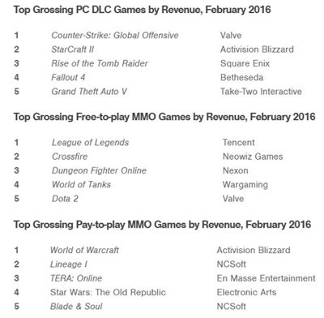

2月全球数字游戏收入62亿美元 同比增10%

据业内数据统计公司SuperData最近发布的报告显示，2016年2月全球数字游戏市场规模达到了62亿美元，同比增长10%，数字主机游戏在收入和用户量方面的增幅最大，分别达到了同比34%和27%的速度。由于1月份的大作发布数量和去年同期相比很少，所以收入同比下滑了18万美元。 然而，额外内容的消费表现强势，而且增长趋势也非常好，手游平台的收入以及用户都继续出现增长，新兴市场开始逐渐引起了开发商们的注意力。
手游
PC游戏
按照目前的情况，似乎中国的公司每个月都会收购一两家欧美发行商，比如山东宏达矿业3亿美元收购了《RuneScape》开发商Jagex。其中的原因很简单：随着中国经济的增速减缓，该地区的工业企业开始积极寻求业务多元化，收购Jagex这样的公司可以让中国公司扩张到新的行业和地区。虽然已经有15年历史的《RuneScape》已经没有当年那么火了，但留存的用户们仍然在持续不断地消费，这款MMO页游上个月的收入还达到了620万美元。3月23日，Jagex还透露了卡牌游戏《编年史：卢恩传奇》的公测。考虑到目前中国市场的科技公司估值较高，SuperData预测未来或许有更多的欧美公司被收购。
育碧似乎希望在VR领域快人一步，今年，这家法国游戏公司将会面向Oculus Rift、HTC Vive以及PlayStation VR推出两款VR专属游戏，分别是《Eagle Flight》和《Werewolves Within》，这种策略和其他主流发行商的做法相反，比如Take-Two Interactive一直都表示，在新平台的可持续性和受欢迎度被真正的证明之前都不会考虑。SuperData预计手游、PC和主机平台的VR游戏收入规模总共为4.1亿美元，在2020年有望增至69亿美元。对于目前还没有进入VR领域的发行商们来说，他们或许会通过收购小型VR工作室的方式进入这个市场。
数字主机游戏
NFL季后赛的推动使得Madden NFL 16成为了数字主机游戏收入前五名，月收入同比增长了23%，EA的这款体育游戏大作持续吸引玩家们进行消费。作为对比，2月份的重头戏之一，《街头霸王5》并没有能够给其发行商Capcom带来太多数字收入方面的增长。虽然Capcom旨在把该游戏设计成一款长期服务式的业务，但游戏发布时的完成度不高，招来了很多粉丝们的批评。
由于Xbox One的销量一直落后于索尼的PlayStation 4，微软准备放弃每隔5-7年推出一代新主机的策略。该公司目前准备进入智能机市场并且通过频繁更新的方式改善主机性能。该公司表示，Xbox将不再专门作为一个独立的平台，而是和windows以及移动平台等进行整合，其他的变化还包括，此前Xbox专属游戏也将登上PC平台，Windows 10将在今年暑期正式登录Xbox One平台。